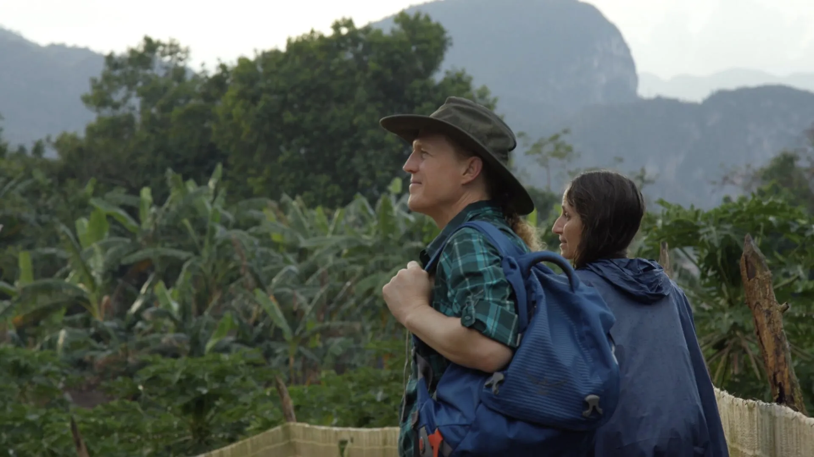
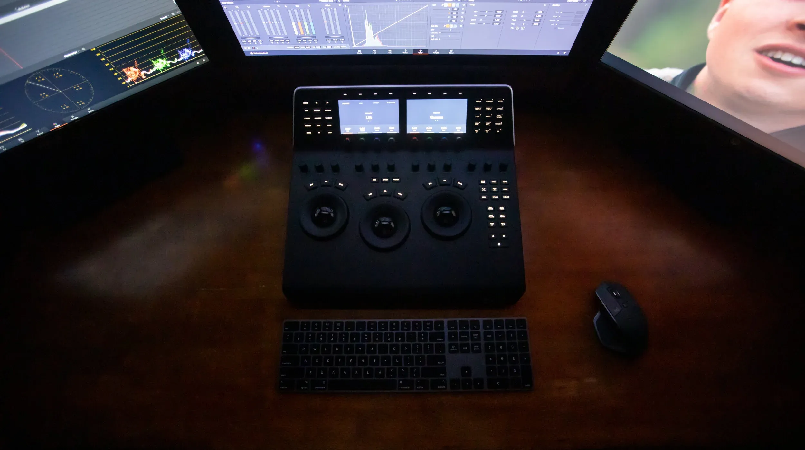
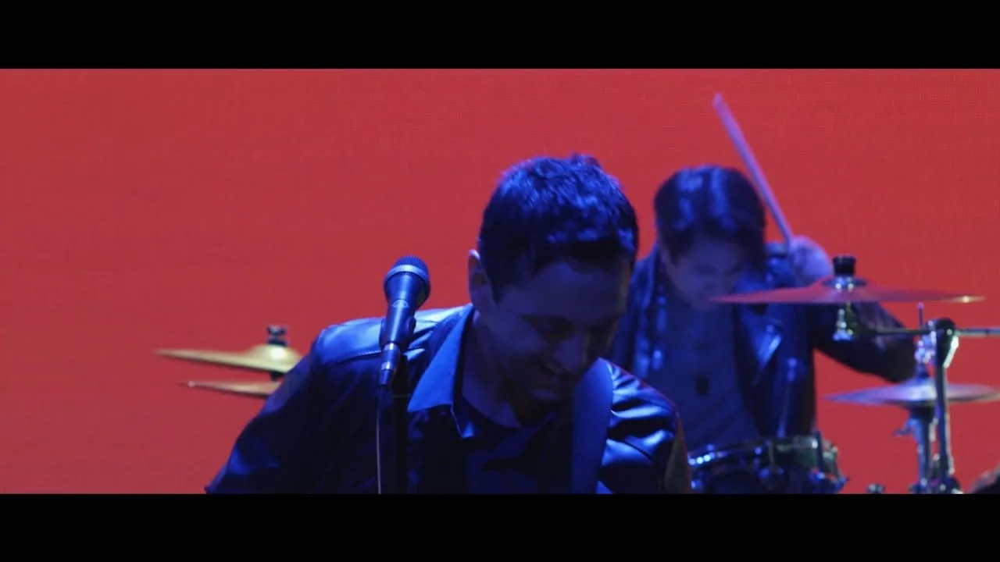
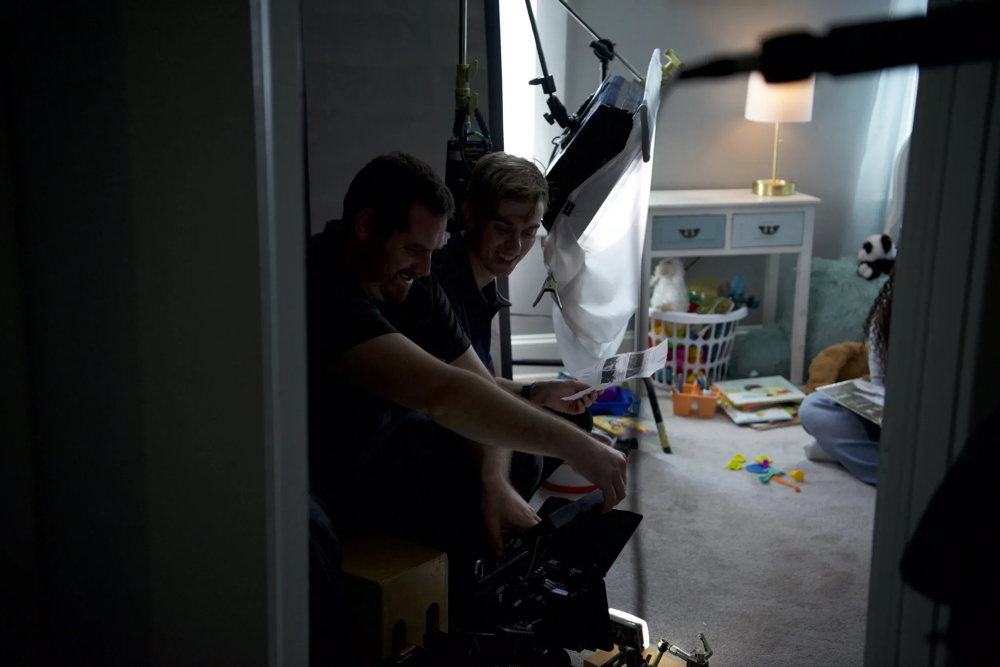

Baltimore
We are
MindInMotion
We make films for nonprofits, universities and public agencies. And a few of our own.
- Clients served
- 100+
- Founded
- 2012
- Feature films
- 5
Reel 1Client work
Who hired us
An organ donation nonprofit, a state agency, a university, a health nonprofit and a county police department.
SC 01Infinite Legacy

Corporate
Infinite Legacy - Joe
Infinite Legacy asked us to film donor families and organ recipients. Joe is one of them.

Corporate
Infinite Legacy - Chelsea
Small crew, no rush. The films played at fundraising galas.
SC 02MD State Dept of Education

MD State Dept of Education
Because Quality Matters
Commercial
Maryland wanted parents to choose licensed childcare. We filmed real families so the campaign wouldn't sound like a government ad.
SC 03Johns Hopkins AAP

Johns Hopkins AAP
Cuba Field Course Experience
Corporate · Director: Josh Land & Victor Fink
We spent the whole course in Cuba with the students. Hopkins has used the film to recruit for years.

They go the extra mile to create the best content and offer helpful input on ways to create the most appealing video for our audience.
SC 04American Lung Association
No scripts. No actors.
A lung cancer patient and her doctor, sharing what might help the next patient.
American Lung Association
Ashley & Dr. Reed - Patient-Provider Story
Corporate · Director: Josh Land & Victor Fink
Their film is part of a Lung Association series used nationwide for patient education and advocacy.
SC 05Anne Arundel County Police

Anne Arundel County Police
AACPD Recruitment
Commercial · Director: Josh Land & Victor Fink, DP: Alex Guckert
The department ran it on its careers page and at recruiting events to find qualified academy candidates.
Got a gala or a campaign coming up?
Production and post
Our quotes include planning, crew, equipment, the shoot, editing, color, motion graphics and delivery. If anything costs extra, we say so up front.
Commercial
TV spots and social cuts. Commercials live or die in the first three seconds. Our Maryland Excels PSAs aired statewide, and we made a WellPoint spot for InterPublic.
Corporate
Not every video needs to sell something. Some recruit, train a team or show donors where their money goes. Our interviews run like conversations, not depositions.
Film
Features, shorts, documentaries and music videos. We can produce the whole film or join your crew. Ask what your budget can do and we'll tell you straight.
Post-Production
We edit in Premiere, Final Cut, Avid or DaVinci Resolve, and color in Resolve. If your editor left mid-project, we'll finish it.

Our own films
Victor shot "Lotus Eyes" and "I Like Me" while Josh directed. Now we co-direct.


Music videos
-

Ghost Light
-

Call Your Wife
-

Lovers in Lullaby
-

Heart & Thunder
We'd like to make yours next


Film school friends. Business partners.
Baltimore native Joshua Land and Boston transplant Victor Fink founded MindInMotion in 2012. We met in a 16mm filmmaking class at Johns Hopkins and quickly bonded over being obsessed with movies and wanting to spend as much time outside of school working on film projects as possible.
Since then we've made five feature films together and grown a company making film and video for all kinds of clients. Our work spans documentary and fiction, and has taken us everywhere from Baltimore and Washington DC to the mountains of Washington state and the rainforests of Cuba.
Our feature films "I Like Me" and "Bad Witch" have screened at festivals and are available on major VOD platforms. When we're not working for clients, we're working on our own projects. Our new feature film, "Incubation," is now screening at festivals.
- Joshua Land
- Co-Founder / Director / Editor
- Victor Fink
- Co-Founder / Cinematographer / Producer
In their words
Not only are Josh and Victor an amazing creative team with a TON of knowledge on every facet of filmmaking, they're just great people.
MindInMotion are terrifically talented. Easy to work with. And really care about the quality of their work.
Super professional, a lot of fun to work with and always on schedule. Would recommend them for virtually any project!
- Clients include
- Johns Hopkins
- MD State Education
- American Lung Assoc.
- InterPublic
- Anne Arundel PD
- Infinite Legacy
- Packard Center
